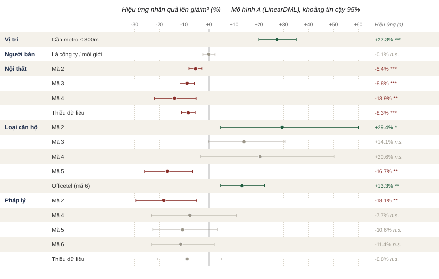
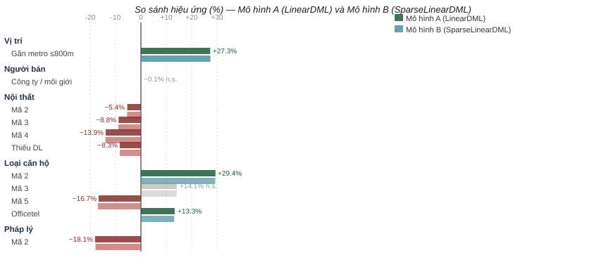

Phân tích yếu tố nhân quả tác động đến giá căn hộ
tại Thành phố Hồ Chí Minh
Ước lượng tác động nhân quả của các đặc điểm tin rao lên giá bán trên mỗi mét vuông bằng phương pháp Double Machine Learning
§Tóm tắt
Nghiên cứu sử dụng 6.619 tin rao bán căn hộ tại Thành phố Hồ Chí Minh (nguồn dữ liệu từ Chợ Tốt) nhằm trả lời câu hỏi: trong số các đặc điểm quan sát được của một tin rao như vị trí, người bán, tình trạng nội thất, loại hình căn hộ, loại giấy tờ pháp lý, yếu tố nào có tác động nhân quả (chứ không chỉ là tương quan) lên giá bán mỗi mét vuông, sau khi đã kiểm soát lẫn nhau và kiểm soát các đặc điểm vật lý cơ bản (diện tích, số phòng, số phồng vệ sinh, số tầng, vị trí địa lý). Phương pháp Double Machine Learning được áp dụng và kiểm chứng chéo bằng hai cặp mô hình: LinearDML so với SparseLinearDML cho phân việc tích đa yếu tố, và Causal Forest so với hồi quy gián đoạn (RDD) để khảo sát riêng yếu tố vị trí. Kết quả cho thấy vị trí (nằm gần metro ≤ 800m) là yếu tố có tác động nhân quả mạnh và vững nhất (khoảng +27% lên giá/m²); loại căn hộ và tình trạng nội thất có tác động rõ ở một số nhóm; loại giấy tờ pháp lý phần lớn mất ý nghĩa sau khi kiểm soát; và người bán (công ty hay cá nhân) hầu như không ảnh hưởng đến giá.
1Câu hỏi nghiên cứu và khung nhân quả
Vì sao tương quan là chưa đủ?
Một hồi quy thông thường có thể cho thấy tin do công ty đăng có giá cao hơn, hay căn có nội thất đầy đủ thì sẽ đắt hơn. Tuy nhiên, các đặc điểm này đan xen nhau: một căn gần trung tâm thường vừa có nội thất tốt, vừa do môi giới đăng, vừa tọa lạc ở quận đắt đỏ. Nếu không tách biệt, ta dễ gán nhầm cho một yếu tố mà phần tác động đó vốn thuộc về yếu tố khác. Câu hỏi đặt ra đòi hỏi ước lượng hiệu ứng riêng phần (partial effect), trong khi giữ các yếu tố còn lại cố định - đây là bài toán suy luận nhân quả, không phải dự báo.
Cách tiếp cận
Chúng tôi coi cả năm đặc điểm là những tác nhân ngang hàng, đưa vào mô hình đồng thời, để mỗi hệ số
phản ánh tác động của yếu tố đó sau khi đã khử ảnh hưởng của các yếu tố khác và ảnh hưởng của đặc điểm vật lý.
Biến kết quả là log(giá triệu/m²), do đó hệ số này xấp xỉ phần trăm thay đổi giá; được tính bằng
(ehệ số − 1) × 100%.
2Dữ liệu
Dữ liệu là tin rao bán căn hộ tại TP.HCM thu thập từ nền tảng Chợ Tốt - dữ liệu có ngữ cảnh Việt Nam,
quy mô vượt 2.000 quan sát theo yêu cầu. Sau khi loại các tin trùng mã list_id, mẫu còn
6.619 tin; mẫu đưa vào mô hình đa yếu tố gồm 6.500 quan sát. Riêng phần khảo sát yếu tố
vị trí bằng Causal Forest được giới hạn trong phạm vi 3km quanh tuyến metro (còn 1.470 tin, mẫu ước
lượng 299) nhằm bảo đảm so sánh công bằng.
Bảng 1. Vai trò và mô tả các biến trong mô hình.
| Vai trò | Biến | Kiểu dữ liệu | Mô tả |
|---|---|---|---|
| Kết quả (Y) | log_price_per_m2 | float (continuous) | Logarit giá bán (triệu đồng) trên mỗi m² |
| Yếu tố (T) | near_metro_800m | binary (0/1) | Vị trí — căn nằm trong bán kính 800m tới ga metro (Haversine) |
| is_company_ad | binary (0/1) | Người bán — tin do công ty/môi giới đăng (so với cá nhân) | |
| furnishing_sell | categorical (one-hot) | Nội thất — tình trạng nội thất (nhóm mã, không thứ tự) | |
| apartment_type | categorical (one-hot) | Loại căn hộ — chung cư / officetel / … (nhóm mã) | |
| property_legal_document | categorical (one-hot) | Pháp lý — loại giấy tờ (nhóm mã, không thứ tự) | |
| Kiểm soát (W) | size, rooms, toilets, floornumber | float / int (continuous) | Đặc điểm vật lý: diện tích, số phòng, số toilet, tầng |
| area_name | categorical (one-hot) | Khu vực / quận (biến giả) — kiểm soát mặt bằng giá theo địa bàn |
Các biến nhóm (nội thất, loại căn hộ, pháp lý) được mã hóa one-hot và coi là danh mục không thứ tự — không suy diễn "mã lớn hơn thì tốt hơn". Một số nhãn text chưa có trong dữ liệu gốc (được nhắc đến trong phần Giới hạn).
3Phương pháp
Double Machine Learning
DML ước lượng hiệu ứng nhân quả theo hai bước. Thứ nhất, dùng mô hình học máy (ở đây là LightGBM) dự đoán riêng giá và từng yếu tố từ các biến kiểm soát W, rồi lấy phần dư. Thứ hai, hồi quy phần dư của giá lên phần dư của các yếu tố. Nhờ bước trực giao hóa (orthogonalization) này, phần nhiễu phi tuyến do đặc điểm vật lý và khu vực gây ra được loại bỏ, cho hệ số ít chệch và giữ được suy luận thống kê hợp lệ (p-value, khoảng tin cậy).
# Bước 1 — Orthogonalization (dùng LightGBM, cross-fitting 5 folds)
Ỹ = Y − E[Y | W] # phần dư giá sau khi khử ảnh hưởng đặc điểm vật lý
T̃ⱼ = Tⱼ − E[Tⱼ | W] # phần dư từng yếu tố j (vị trí, nội thất, …)
# Bước 2 — Causal inference (final stage)
# LinearDML : OLS(Ỹ ~ T̃₁ + T̃₂ + … + T̃ₖ)
# SparseLinearDML: debiased Lasso(Ỹ ~ T̃₁ + … + T̃ₖ)
θ = argmin Σ (Ỹᵢ − θ · T̃ᵢ)²
# Kết quả
# θⱼ ≈ tác động nhân quả riêng của yếu tố j lên log(giá/m²)
# Hiệu ứng % = (exp(θⱼ) − 1) × 100Hai cặp mô hình so sánh
Bảng 2. Hai cặp mô hình nhân quả và mục đích so sánh.
| Vai trò | Mô hình 1 | Mô hình 2 | Mục đích |
|---|---|---|---|
| Trục chính (5 yếu tố) | LinearDML final stage: OLS |
SparseLinearDML final stage: debiased Lasso |
Kiểm tra độ vững khi nhiều yếu tố tương quan; nếu hai mô hình cho kết quả tương tự thì hệ số đáng tin, không phải nhiễu do đa cộng tuyến. |
| Bổ trợ (vị trí) | Causal Forest DML + rừng nhân quả |
RDD gián đoạn tại ngưỡng 800m |
Kiểm chứng chéo bằng hai hệ giả định khác nhau: unconfoundedness (Causal Forest) và tính liên tục cục bộ quanh ngưỡng (RDD). |
Trong mô hình, vị trí được đo bằng đúng một biến - gần metro ≤ 800m hay không - còn quận/khu vực được đưa vào nhóm kiểm soát. Do đó hệ số phản ánh: gần metro có làm giá cao hơn không, khi so trong cùng một khu vực, chứ chưa so sánh quận này với quận khác.
4Kết quả chính - 5 yếu tố ngang hàng

Kết quả dưới đây trình bày hiệu ứng nhân quả của từng yếu tố lên giá/m², ước lượng đồng thời trên mẫu 6.500 quan sát. Mỗi hệ số được so với nhóm tham chiếu tương ứng (loại căn hộ: Chung cư; nội thất: mã 1; pháp lý: nhóm nền; người bán: cá nhân).
4.1 · Biểu đồ hiệu ứng và khoảng tin cậy

4.2 · So sánh Mô hình A (LinearDML) và Mô hình B (SparseLinearDML)
Bảng 3. Hiệu ứng (%) lên giá/m² của từng yếu tố theo hai mô hình. Hệ số ở thang log; khoảng tin cậy và p-value của Mô hình A.
| Nhóm | Chi tiết | Hệ số A | HƯ. A (%) | KTC 95% (A) | p (A) | HƯ. B (%) | p (B) | Kết luận |
|---|---|---|---|---|---|---|---|---|
| Vị trí | Gần metro ≤ 800m | +0.241 | +27.3 | [+20.0; +35.0] | 0.000*** | +27.4 | 0.000*** | Tăng ▲ |
| Người bán | Là công ty / môi giới | -0.001 | -0.1 | [-2.4; +2.3] | 0.960n.s. | -0.1 | 0.947n.s. | Không — |
| Nội thất | Mã 2 | -0.056 | -5.4 | [-8.1; -2.8] | 0.000*** | -5.4 | 0.000*** | Giảm ▼ |
| Mã 3 | -0.092 | -8.8 | [-11.7; -5.9] | 0.000*** | -8.9 | 0.000*** | Giảm ▼ | |
| Mã 4 | -0.150 | -13.9 | [-21.9; -5.3] | 0.002** | -14.0 | 0.004** | Giảm ▼ | |
| Thiếu dữ liệu | -0.087 | -8.3 | [-11.0; -5.6] | 0.000*** | -8.3 | 0.000*** | Giảm ▼ | |
| Loại căn hộ | Mã 2 | +0.258 | +29.4 | [+4.8; +60.0] | 0.017* | +29.3 | 0.000*** | Tăng ▲ |
| Mã 3 | +0.132 | +14.1 | [-0.3; +30.6] | 0.055n.s. | +14.0 | 0.045* | Không — | |
| Mã 4 | +0.187 | +20.6 | [-3.2; +50.2] | 0.095n.s. | +20.1 | 0.180n.s. | Không — | |
| Mã 5 | -0.183 | -16.7 | [-25.8; -6.7] | 0.002** | -17.0 | 0.001** | Giảm ▼ | |
| Officetel (mã 6) | +0.125 | +13.3 | [+4.8; +22.4] | 0.002** | +13.1 | 0.005** | Tăng ▲ | |
| Pháp lý | Mã 2 | -0.200 | -18.1 | [-29.5; -5.0] | 0.009** | -17.9 | 0.005** | Giảm ▼ |
| Mã 4 | -0.080 | -7.7 | [-23.2; +11.0] | 0.395n.s. | -7.5 | 0.342n.s. | Không — | |
| Mã 5 | -0.112 | -10.6 | [-22.6; +3.3] | 0.128n.s. | -9.8 | 0.101n.s. | Không — | |
| Mã 6 | -0.121 | -11.4 | [-23.0; +2.0] | 0.093n.s. | -10.5 | 0.069n.s. | Không — | |
| Thiếu dữ liệu | -0.092 | -8.8 | [-20.9; +5.1] | 0.204n.s. | -7.9 | 0.182n.s. | Không — |
Hiệu ứng của mọi yếu tố ở Mô hình A và Mô hình B gần như trùng khít (chênh lệch hệ số lớn nhất chỉ khoảng 0,01). Việc hai bước cuối rất khác nhau - OLS và debiased Lasso - vẫn cho cùng kết quả cho thấy các ước lượng không phải là hệ quả giả của đa cộng tuyến, mà phản ánh nhân quả thật trong dữ liệu.

Chi tiết kết quả theo từng yếu tố
- Vị trí (nằm gần metro): +27% (p<0,001) - lớn nhất và có ý nghĩa mạnh nhất.
- Loại căn hộ: phân hóa rõ - một số loại cao hơn Chung cư đáng kể (mã 2: +29%; Officetel: +13%), riêng mã 5 thấp hơn khoảng 17%; mã 3 và mã 4 chỉ ở mức ranh giới.
- Nội thất: các nhóm 2, 3, 4 đều thấp hơn nhóm tham chiếu (mã 1) một cách có ý nghĩa (−5% đến −14%), hàm ý nhóm tham chiếu là mức nội thất được định giá cao nhất.
- Pháp lý: chỉ 1 trong 5 nhóm (mã 2) có ý nghĩa; phần còn lại khoảng tin cậy đều cắt mốc 0, tức phần lớn không tác động sau kiểm soát.
- Người bán: hệ số xấp xỉ 0 (−0,1%; p=0,96) - kết quả rỗng rõ ràng: công ty hay cá nhân đăng tin không làm thay đổi giá/m².
5Khảo sát bổ trợ: Yếu tố vị trí
Vì vị trí là yếu tố mạnh nhất, chúng tôi kiểm chứng riêng bằng hai phương pháp có giả định khác hẳn nhau, trên phạm vi 3km quanh tuyến metro.
5.1 · Causal Forest
Trên mẫu 299 quan sát (67 gần metro, 232 xa hơn), Causal Forest ước lượng hiệu ứng trung bình ATE = +0,317, tương đương +37,4% giá/m² (KTC 95%: +5,6% … +78,6%). Kết quả cùng chiều và mạnh hơn ước lượng +27% của mô hình đa yếu tố, củng cố kết luận vị trí nằm gần metro có tác động dương lên giá bán.

5.2 · Hồi quy gián đoạn (RDD) quanh ngưỡng 800m
Bảng 4. Ước lượng hiệu ứng cục bộ theo các độ rộng dải (bandwidth) quanh ngưỡng 800m.
| Bandwidth (m) | n | Gần / xa | Hệ số | Hiệu ứng (%) | KTC 95% | p-value |
|---|---|---|---|---|---|---|
| 300 | 400 | 258 / 142 | -0.088 | -8.41 | [-26.7; +14.4] | 0.438n.s. |
| 500 | 584 | 317 / 267 | -0.150 | -13.94 | [-26.8; +1.2] | 0.069n.s. |
| 800 | 689 | 359 / 330 | -0.131 | -12.25 | [-23.6; +0.8] | 0.065n.s. |
| 1200 | 956 | 359 / 597 | -0.166 | -15.25 | [-25.4; -3.7] | 0.011* |

RDD cho hệ số âm (−8% đến −15%, chỉ rõ ý nghĩa ở bandwidth rộng nhất). Đây không phải mâu thuẫn "một đúng một sai" mà là hai câu hỏi khác nhau:
- Mô hình đa yếu tố và Causal Forest kiểm soát khu vực, nên đo "chênh lệch do gần metro trong cùng một quận".
- RDD so sánh các căn ngay sát hai bên ngưỡng 800m, gộp mọi khu vực. Trong phạm vi 3km, khoảng cách tới metro lại tương quan với độ đắt đỏ của địa bàn (nhiều khu trung tâm giá cao nằm ở vành 800m–1200m), nên hiệu ứng cục bộ tại ngưỡng bị nhiễu bởi yếu tố khu vực mà RDD không kiểm soát.
Vì mô hình đa yếu tố (n=6.500, có kiểm soát khu vực) trả lời sát câu hỏi nghiên cứu hơn, ta lấy +27% làm ước lượng đáng tin, và ghi nhận RDD như một cảnh báo về độ nhạy với cách xác định "vị trí".
6Diễn giải và trả lời câu hỏi
Sắp xếp năm yếu tố theo mức độ tác động nhân quả lên giá/m² (đã kiểm soát lẫn nhau và đặc điểm vật lý):
- Vị trí (gần metro) - có, mạnh và vững nhất: +27% (đa yếu tố), +37% (Causal Forest), cùng chiều dương.
- Loại căn hộ - có ở một số nhóm: chênh lệch tùy loại, từ +29% đến −17%.
- Nội thất - có: các nhóm khác biệt −5% đến −14% so với nhóm tham chiếu.
- Pháp lý - phần lớn không: chỉ 1/5 nhóm có ý nghĩa; sau kiểm soát, loại giấy tờ hầu như không tự nó dịch chuyển giá.
- Người bán - không: công ty hay cá nhân đăng tin không tác động lên giá/m².
Yếu tố có tác động nhân quả đến giá/m² là vị trí (gần metro), loại căn hộ và tình trạng nội thất. Ngược lại, người bán không tác động, và loại giấy tờ pháp lý phần lớn chỉ là tương quan bề mặt, mất ý nghĩa khi kiểm soát các đặc điểm khác.
7Giới hạn và giả định
- Giả định unconfoundedness: kết quả chỉ mang tính nhân quả nếu không còn biến gây nhiễu quan trọng bị bỏ sót ngoài các biến đã kiểm soát (ví dụ chất lượng dự án, thương hiệu chủ đầu tư, hướng nhà - chưa có trong dữ liệu).
- Nhãn danh mục chưa đầy đủ: nội thất, pháp lý và một phần loại căn hộ còn ở dạng mã số; chưa gắn được nhãn text chính thức từ định nghĩa trường của Chợ Tốt, nên diễn giải theo mã.
- Căng thẳng Causal Forest và RDD: chiều hiệu ứng của vị trí nhạy với cách định nghĩa và phạm vi mẫu (đã thảo luận ở Mục 5).
- Giá rao khác giá giao dịch: dữ liệu là giá rao bán, có thể lệch so với giá chốt thực tế.
- Chọn mẫu: phần Causal Forest giới hạn trong 3km quanh metro (n=299), nên kết luận riêng của phần đó áp dụng cho vùng gần tuyến metro.
8Kết luận
Bằng Double Machine Learning trên hơn 6.600 tin rao căn hộ TP.HCM và kiểm chứng chéo qua hai cặp mô hình nhân quả, nghiên cứu cho thấy không phải mọi đặc điểm tương quan với giá đều thực sự tác động lên giá. Sau khi tách bạch lẫn nhau và loại nhiễu từ đặc điểm vật lý, vị trí (gần metro) nổi lên là yếu tố nhân quả mạnh và vững nhất, tiếp theo là loại căn hộ và nội thất; trong khi người bán không có vai trò và giấy tờ pháp lý phần lớn chỉ phản ánh tương quan. Sự đồng thuận giữa LinearDML và SparseLinearDML khẳng định độ tin cậy của các ước lượng này.
§Phụ lục
A. Thông số ước lượng đầy đủ
Xem Bảng 3 cho toàn bộ hệ số, khoảng tin cậy và p-value của cả hai mô hình.
B. Đa cộng tuyến giữa các yếu tố
Ma trận tương quan giữa 16 cột yếu tố cho thấy hầu hết |r| < 0,3; cặp cao nhất nằm trong nhóm pháp lý (mã 6 và thiếu dữ liệu, r ≈ −0,60) và giữa các nhóm one-hot của cùng một biến - đây là tương quan cơ học của mã hóa one-hot, không gây lo ngại cho suy luận. Việc Mô hình B (Lasso) trùng kết quả Mô hình A xác nhận đa cộng tuyến không bóp méo ước lượng.

C. Tái lập
Toàn bộ pipeline (làm sạch, tính khoảng cách metro theo Haversine, giới hạn phạm vi, DML / Causal
Forest / RDD) nằm trong notebook ptdltmfinalv2.ipynb. Thư viện chính: econml 0.16,
lightgbm, statsmodels.